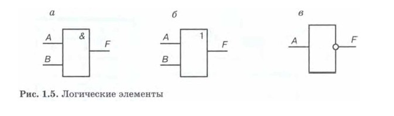

Техника безопасности
При работе в компьютерном классе категорически запрещается:
Находиться в классе в верхней или во влажной одежде;
Класть одежду и сумки на столы;
Находиться в классе с напитками и едой;
Располагаться сбоку или сзади от включенного монитора;
Присоединять или отсоединять кабели, трогать разъемы, провода и розетки;
Передвигать компьютеры и мониторы;
Открывать системный блок;
Прикасаться к экрану монитора;
Включать и выключать компьютеры самостоятельно;
Пытаться самостоятельно устранять неисправности в работе аппаратуры;
Перекрывать вентиляционные отверстия на системном блоке и мониторе;
Ударять по клавиатуре, бесцельно нажимать на клавиши;
Класть книги, тетради и другие вещи на клавиатуру, монитор и системный блок;
Удалять и перемещать чужие файлы;
Использовать дискеты, СD-, DVD-диски, USBфлэш-диски без разрешения учителя.
Если такое разрешение получено, то перед работой необходимо проверить их на
ВИРУС с помощью антивирусных программ;
Приносить и запускать компьютерные игры;
Работать при плохом самочувствии;
Вставать без разрешения преподавателя со своих мест, когда входят посетители;
Мешать работе других учащихся и преподавателя.
Глава 1. Математические основы информатики
§ 1.1. Системы счисления
План урока
| Читать параграф 1.1.1 - 1.1.2 |
| Смотреть урок 1, 2 |
| Создать аккаунты. |
Параграф 1.1.1. Общие сведения о системах счисления
Система счисления — это способ записи чисел с помощью символов (цифр), подчиняющийся определённым правилам.
Системы счисления могут быть:
позиционными (двоичная, десятичная, восьмеричная);
непозиционными (римская, древнеегипетская, вавилонская).
В позиционных системах счисления значение числа зависит от положения цифры в записи числа. Например, числа 69 и 96 имеют
разное значение, т. к. положение цифр в этом числе разное. В первом случае 6 — это количество десятков, а во втором — единиц.
Преимуществом позиционных систем счисления является лёгкость выполнения арифметических операций, единые правила записи чисел.
В непозиционных системах счисления значение числа не зависит от положения цифр в числе.
Параграф 1.1.2. Двоичная система счисления
Двоичная система счисления — позиционная система счисления с основанием 2.
В этой системе счисления числа записываются с помощью двух символов: 0 и 1.
Благодаря непосредственной реализации в цифровых электронных схемах на
логических вентилях, двоичная система используется практически во всех современных
компьютерах и прочих вычислительных электронных устройствах.
Параграф 1.1.3. Восьмеричная система счисления
Восьмери́чная систе́ма счисле́ния — позиционная целочисленная система счисления с основанием 8.
Для представления чисел в ней используются цифры от 0 до 7. Восьмеричная система чаще всего
используется в областях, связанных с цифровыми устройствами.
Параграф 1.1.4. Шестнадцатеричная система счисления
Шестнадцатеричная система счисления — позиционная система счисления по основанию 16.
В качестве цифр этой системы счисления обычно используются цифры от 0 до 9 и латинские
буквы от A до F. Буквы A, B, C, D, E, F имеют значения 1010, 1110, 1210, 1310, 1410, 1510 соответственно.
План урока
| Приветствие |
| Проверка домашнего задания |
| Самостоятельная работа |
| Изучение элементов новой темы |
| Подведение итогов |
Проверка домашнего задания
Задача: Создать презентацию из 5 страниц по теме "Шестнадцатеричная
система счисления"
1-ая страница: Титульный лист
2-ая страница: Пример перевода любого числа х>=32 из десятичной
системы в шестнадцатеричную систему.
3-ая страница: Пример перевода выбранного числа х из
шестнадцатеричой системы в десятичную систему.
4-яя страница: Шестнадцатеричный код в ситеме hex
5-ая страница: Заключительный слайд
Параграф 1.1.5. Правило перевода целых деятичнных чисел в другие
системы счисления
Параграф 1.1.6. Двоичная арифметика
Параграф 1.1.7. «Компьютерные» системы счисления
§ 1.2. Представление чисел в компьютере
Параграф 1.2.1. Представление целых чисел
Параграф 1.2.2. Представление вещественных чисел
Самоконтроль
§ 1.3. Элементы алгебры логики
Параграф 1.3.1. Высказывание
Высказывание — это предложение на любом языке,
содержание которого можно однозначно определить
как истинное или ложное.
Параграф 1.3.2. Логические операции
Параграф 1.3.3. Построение таблиц истинности для логических
выражений
Домашнее задание
Параграф 1.3.3 "Построение таблиц истинности для логических выражений"
--- Выучить
Проверка домашнего задания
Задача: Создать презентацию из 5 страниц по теме "Таблицы
истинности"
1-ая страница: Титульный лист
2-ая страница: Таблица истинности логического "НЕ"
3-ая страница: Таблица истинности логического "ИЛИ"
4-яя страница: Таблица истинности логического "И"
5-ая страница: Заключительный слайд
Параграф 1.3.4. Свойства логических операций
Параграф 1.3.5. Решение логических задач
Параграф 1.3.6. Логические элементы

Домашнее задание
Параграф 1.3.6 "Логические элементы" --- Выучить
Проверка домашнего задания
Задача: Создать презентацию из 5 страниц по теме "Логические
элементы"
1-ая страница: Титульный лист
2-ая страница: Логический элемент &(схема+таблица)
3-ая страница: Логический элемент |(схема+таблица)
4-яя страница: Логический элемент ~(схема+таблица)
5-ая страница: Заключительный слайд
Глава 2. Основы алгоритмизации
§ 2.1. Алгоритмы и исполнители
Параграф 2.1.1 "Алгоритмы и исполнители"
Параграф 2.1.2 "Исполнитель алгоритма"
Исполнитель
это некоторый объект (человек, животное,
техническое устройство), способный выполнять
определённый набор команд.
План урока
| Приветствие |
| Проверка домашнего задания |
| Исполнитель черепашка в Python |
| Базовые фигуры в программе GeoGebra |
| Базовые фигуры с помощью черепашки |
| Подведение итогов |
Домашнее задание
Параграф 2.1.1 "Алгоритмы и исполнители" --- Выучить
Параграф 2.1.2 "Исполнитель алгоритма" --- Выучить
Practical work
Task № 1: Create a folder on your desktop named "Executor".
Task № 2: Create a file with the extension .py inside this folder.
Task № 3: Next follow the instructions of Eduard Gomerosovich or
Valentina Alexandrovna.
§ 2.2. Способы записи алгоритмов
Параграф 2.2.1 Словесные способы записи алгоритмов
Параграф 2.2.2 Блок-схемы
Блок-схема — распространённый тип схем (графических моделей), описывающих алгоритмы или процессы,
в которых отдельные шаги изображаются в виде блоков различной формы,
соединённых между собой линиями, указывающими направление последовательности.
План урока
| Приветствие |
| Проверка домашнего задания |
| Создание презентации - 15 минут |
| Программирование - массив |
| Программирование - цикл |
| Подведение итогов |
Домашнее задание
Параграф 2.2.1 "Словесные способы записи алгоритмов" --- Выучить
Параграф 2.2.2 "Блок-схемы" --- Выучить
Practical work
Task № 1: Кумир.
Домашнее задание
Параграф 2.2.3.: "Алгоритмические языки" --- Выучить
Контрольная работа
1. Решить задачу из
картинки
2. Сохранить на рабочий стол файл и обстановку
3. Сгенерировать в ИИ свой портрет
4. Создать аккаунт на Rockus.su
5. Прикрепить файл и обстановку в раздел "Классные работы"
Параграф 2.3. Объекты алгоритмов
Параграф 2.4. Основные алгоритмические конструкции
Домашнее задание
Параграф 2.4.1. Следование
Параграф 2.4.2. Ветвление
Параграф 2.4.3. Повторение
План урока
| Приветствие |
| Проверка домашнего задания |
| Прохождение квеста |
| Основные алгоритмические конструкции |
| Подведение итогов |
Практическая работа
Задача: Создать презентацию из 4 слайдов.
1 слайд: Титульный лист.
2 слайд: Блок схема "Следование".
3 слайд: Блок схема "Ветвление".
4 слайд: Блок схема "Повторение".
5 слайд: Заключительный.
Алфавит и синтаксис языка Python
Ввод-вывод в Python
Циклы (for, while) в Python
Цикл for используется для итерации по последовательности,
в то время как цикл while выполняется до тех пор,
пока условие истинно. В цикле for необходимо указать
последовательность, по которой будет итерироваться цикл.
В цикле while необходимо указать условие, при котором будет
выполняться цикл.
Массивы
Массив — это фундаментальная структура данных и важная
часть большинства языков программирования. В Python
массивы — это контейнеры, способные хранить более одного
элемента одновременно.
В частности, они представляют собой упорядоченный набор
элементов, каждое значение которого относится к одному
и тому же типу данных. Это самое важное, что нужно
помнить о массивах в Python.
Практическая работа
Задача № 1: Создать каталог на рабочем столе с именем "test_100500".
Задача № 2: Открыть каталог "test_100500" в VS Code и создать файл
main.py в этом каталоге.
Задача № 3: Получить год рождения с клавиатуры.
Задача № 4: Вывести на экран возраст
Задача № 5: Создать цикл и вывести на экран от 0 до 10
Условный оператор
Условный оператор if является началом условной конструкции.
Далее идёт условие, которое возвращает логическое значение
True (истина) или False (ложь). Завершается условие символом
«двоеточие». Затем — обязательный отступ в четыре пробела,
он показывает, что строки объединяются в один блок.
Отступ аналогичен использованию фигурных скобок или
ключевых слов begin и end в других языках программирования.
Практическая работа
Задача № 1: Получить целое число с клавиатуры.
Задача № 2: Сравнить с нулём
Задача № 3: Вывести на экран "Число положительное" если число больше
нуля
Задача № 4: Вывести на экран "Число отрицательное" если число меньше
нуля
Задача № 5: Вывести на экран "Число равно нулю" если число равно нулю
Цикл for и массив
Практическая работа
Задача № 1: Создать массив с именем array
Задача № 2: Заполнить массив вручную от 0 до 9 включительно
Задача № 3: Вывести элементы массива на экран
Задача № 4: Вывести чётные элементы массива
Задача № 5: Вывести нечётные элементы массива
Задача № 6: Вывести элементы массива в одну строку разделяя запятыми
Задача № 7: Вывести элементы массива в одну строку разделяя табуляцией
Задача № 8: Вывести элементы массива на экран столбиком
Конец второго триместра
Practical work
Задания для практических работ.
Электронный учебник - стр. 125
Бумажный учебник - стр. 145
Видеоурок
Практическая работа (повтор условного оператора)